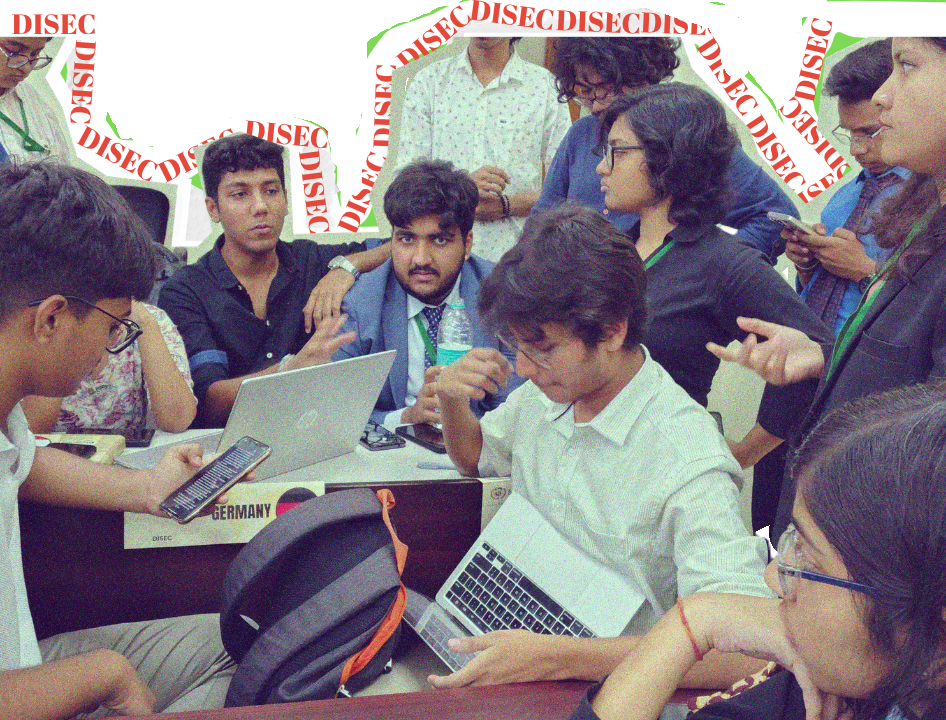
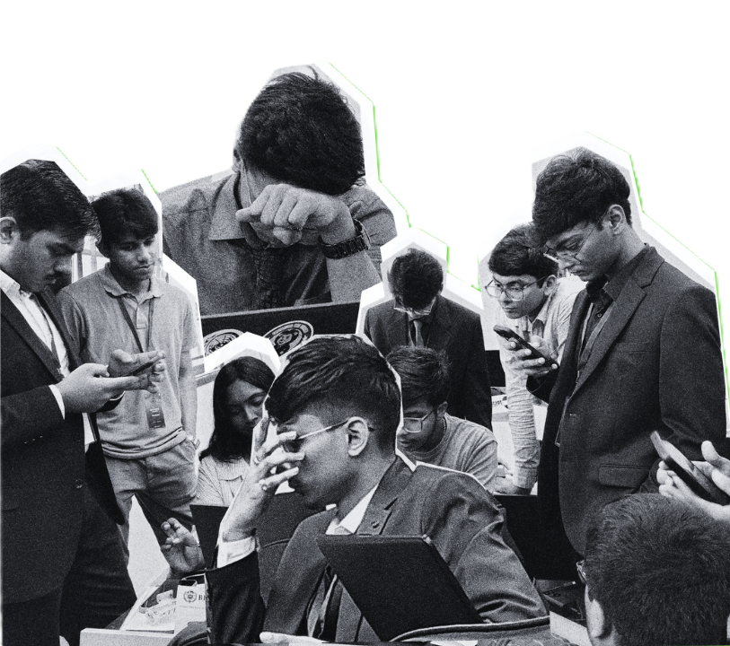

DISEC


DISEC debated the non-proliferation of an arms race in space. A very competitive committee, it witnessed a perpetually evolving debate spanning international law, treaties, conventions and rigorous analysis of global geopolitics.

Space? Arms race? DISEC was an astonishingly engaging committee.
"There were references, clauses and arguments everywhere."
DISEC UNGA DISEC UNGA DISEC UNGA DISEC UNGA DISEC UNGA DISEC UNGA
DISEC UNGA DISEC UNGA DISEC UNGA DISEC UNGA DISEC UNGA DISEC UNGA
DISEC UNGA DISEC UNGA DISEC UNGA DISEC UNGA DISEC UNGA DISEC UNGA
The Executive Board made sure to encourage participation and raise meaningful questions that steered participants to expand on and refine their understanding of the UN system.
It was one of those committees where you note down a lot of things verbatim — too many people making great points that drew upon various aspects of the agenda.


LOK
SABHA


Lok Sabha weighed in on probably the most discussed concern in the nation: national security. Reviewing India's current policy accompanied by deliberations on indigenous defence technology and border infrastructure, the delegates fought tooth and nail to manufacture heated debate.

"Arre yawr kya crazy committee thee."
"Gonna remember this for a while."
LOK SABHA LOK SABHA LOK SABHA LOK SABHA LOK SABHA LOK SABHA
LOK SABHA LOK SABHA LOK SABHA LOK SABHA LOK SABHA LOK SABHA
LOK SABHA LOK SABHA LOK SABHA LOK SABHA LOK SABHA LOK SABHA
"Somebody stood up on the table because their voice was being ignored. That sums it up. Captain, O My Captain."
"Zero hour was so peak. Everybody was highlighting issues, and just so much was going around in the room. Sooooo goooooood."


The room remembers.
BECON was built around two rooms, two formats and a large number of arguments. The photographs are the record you can see. The speeches, notes, negotiations and half-formed ideas were the part nobody could photograph.
28–29 March 2026 · IIEST Shibpur